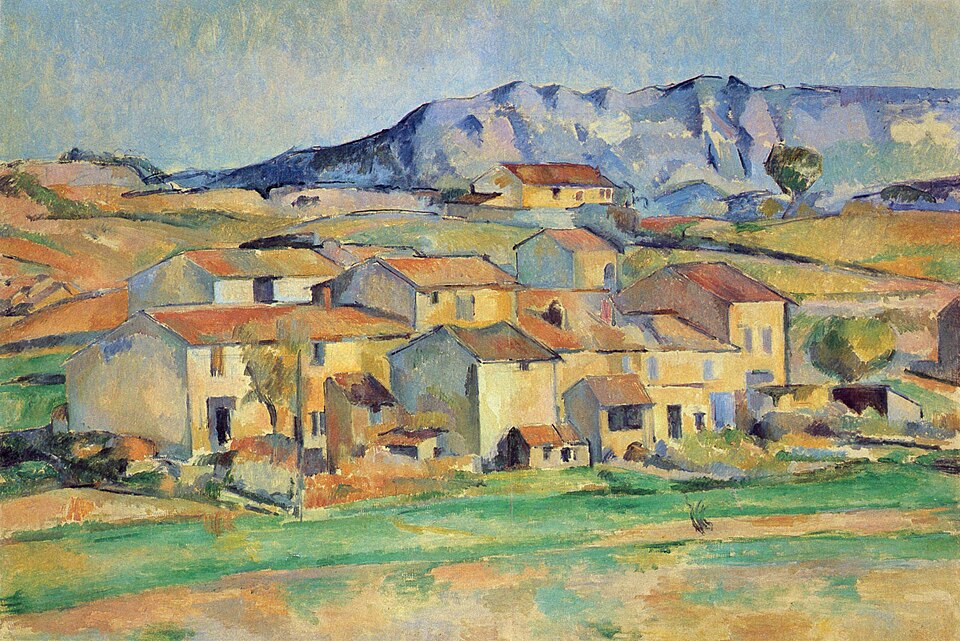
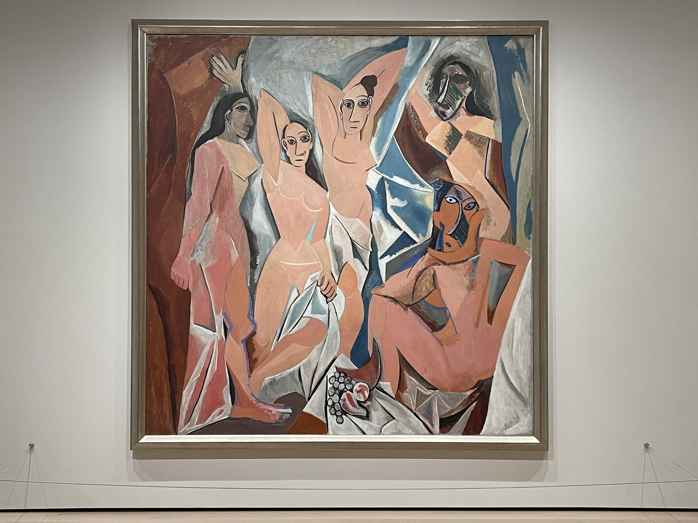
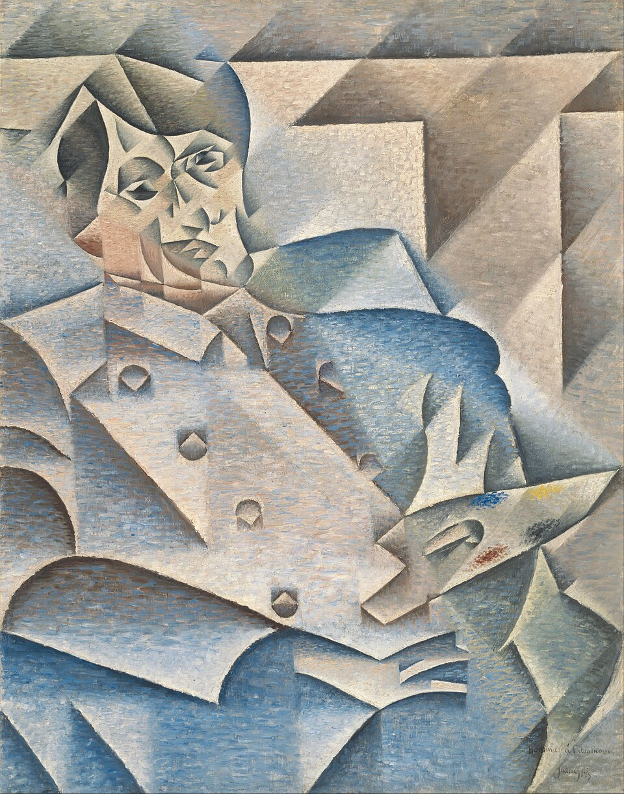
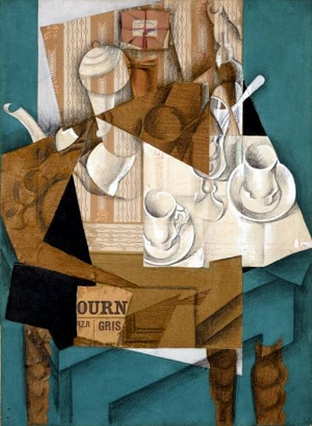
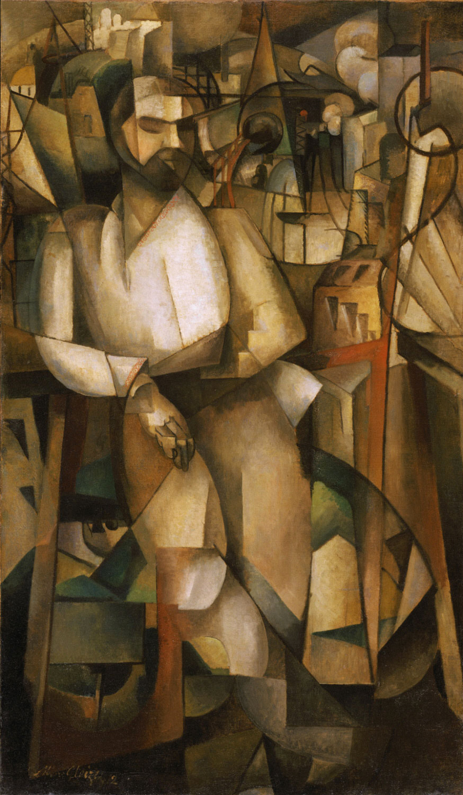
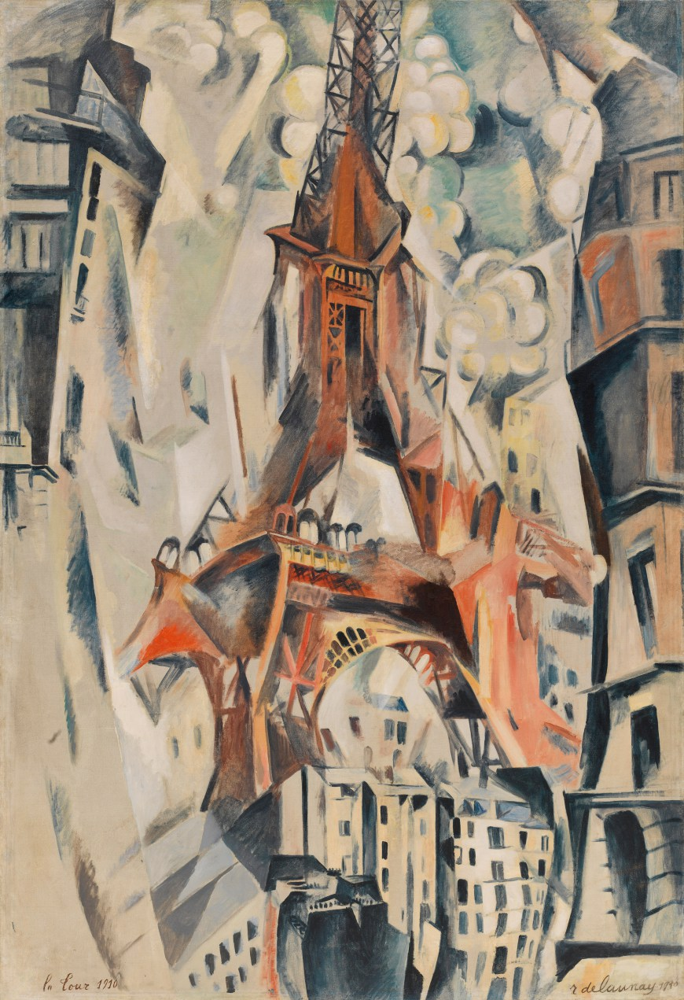
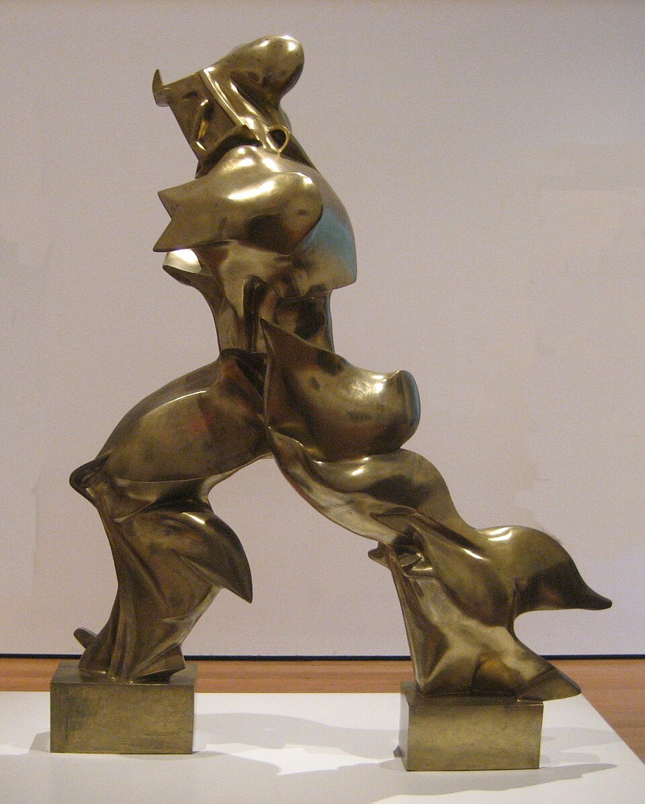
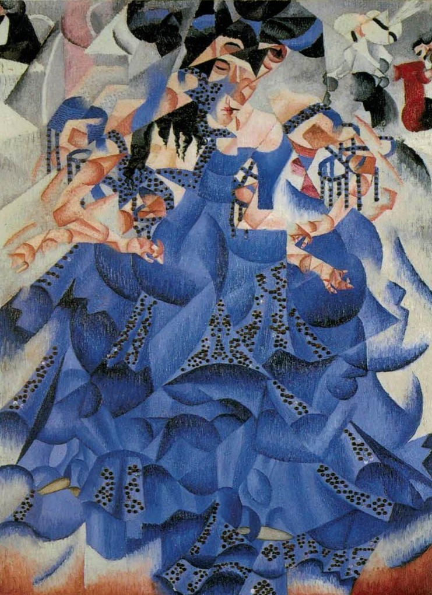
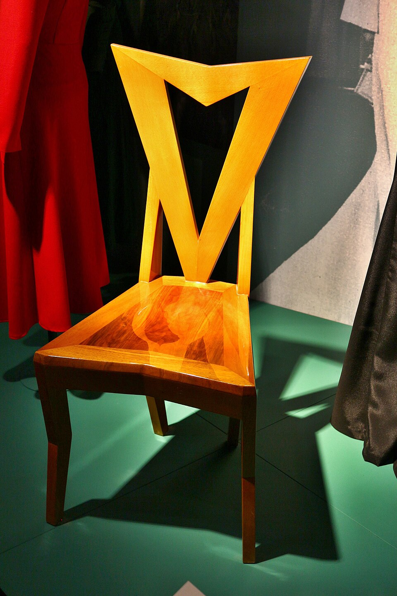
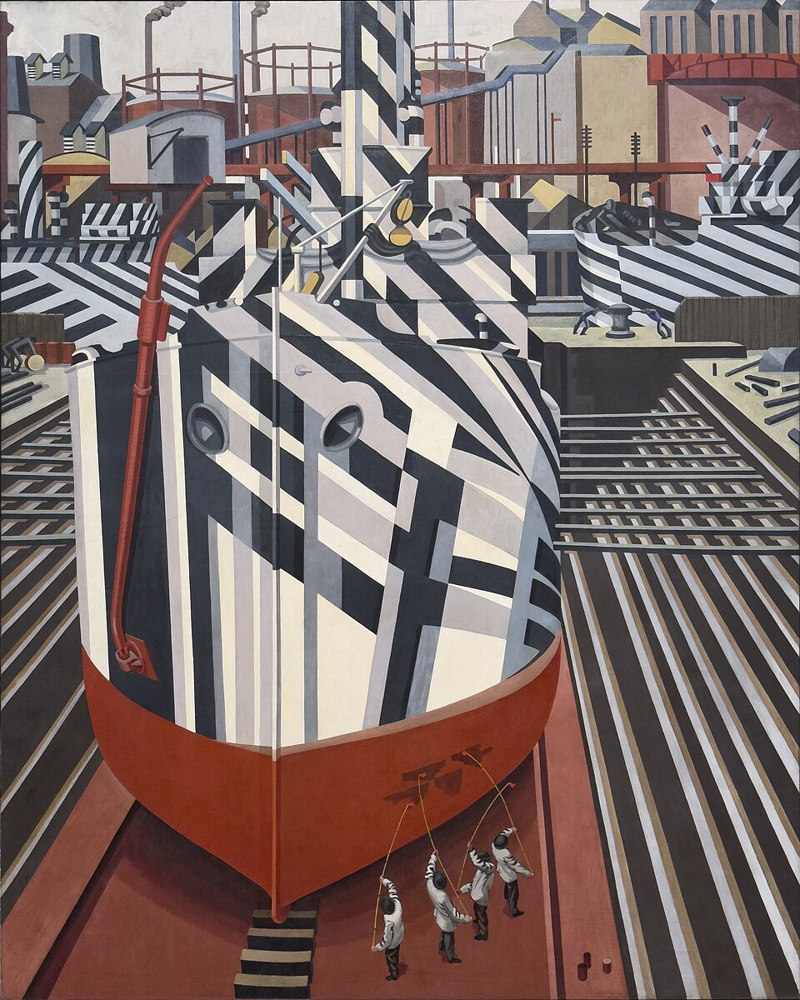

후기 인상주의 → 입체주의의 전조
입체주의는 사물을 단순히 “각진 모양”이나 “큐브 형태”로 그리는 화풍이 아니다. 더 근본적인 혁신은 르네상스 이후 서양회화가 당연하게 사용해온 한 사람·한 위치·한 순간에서 바라본 하나의 원근법을 포기한 것이다. 피카소와 브라크는 대상을 여러 방향에서 관찰하고 해체한 뒤, 서로 다른 면과 정보를 한 화면에 동시에 재구성했다.
한 자리에서 본 모습을 고정하지 않고 앞·옆·위의 정보를 한 화면에 함께 넣는다.
사물을 외형 그대로 복제하기보다 면과 구조로 분해하여 다시 조립한다.
그림을 현실로 열린 창처럼 만드는 원근법 대신 캔버스의 평면성을 드러낸다.
여러 방향에서 본 경험이 하나의 화면에 겹치면서 시간적 관찰이 암시된다.
신문·벽지·라벨 등을 붙이며 회화와 현실 사물의 경계 자체를 흔든다.

세잔의 구조적 회화에 대한 관심이 더욱 커진다.
파리 가을 살롱의 회고전이 새로운 세대에게 강한 영향을 준다.
피카소가 전통적 인체와 하나의 공간을 극단적으로 해체한다. 같은 해 피카소와 브라크가 만나기 시작한다.
기하학적으로 단순화된 풍경을 계기로 비평에서 ‘큐브’라는 표현이 등장하고 Cubism이라는 명칭으로 발전한다.
피카소와 브라크가 대상과 공간을 작은 면으로 철저히 분해한다.
콜라주·종이붙이기를 사용하며 더 단순하고 선명한 형태로 다시 ‘조립’하는 단계로 이동한다.

약 1910–1912년 피카소와 브라크의 그림에서는 색이 갈색·회색·황토색처럼 제한되고, 인물·악기·탁자 같은 대상이 작은 면으로 끝없이 분해된다. 이를 보통 분석적 입체주의(Analytic Cubism)라고 부른다.


1907–1914년 매우 긴밀한 대화를 통해 분석적·종합적 입체주의의 핵심 언어를 발전시켰다.
피카소·브라크의 언어를 받아들이면서 보다 선명한 구성, 색채, 계획된 구조를 발전시켰다.
대규모 살롱 전시와 저술을 통해 입체주의를 보다 공개적이고 이론적인 국제 운동으로 확산시켰다.

글레즈와 장 메챙제는 1912년 《입체주의에 관하여(Du “Cubisme”)》를 출판하며 새 회화를 이론적으로 설명하려 했다. 따라서 입체주의는 피카소와 브라크의 사적 실험에서 출발했지만 빠르게 유럽 전위미술 전체의 문제로 확장되었다.
| 비교 항목 | 세잔 | 분석적 입체주의 | 종합적 입체주의 |
|---|---|---|---|
| 핵심 질문 | 자연의 구조를 어떻게 견고하게 만들까? | 대상을 여러 면으로 얼마나 분석할 수 있을까? | 기호와 재료로 어떻게 다시 구성할까? |
| 대상 | 단순한 덩어리로 정리 | 작은 면으로 분해 | 큰 기호적 형태로 합성 |
| 시점 | 전통 원근법에서 미묘하게 벗어남 | 복수의 시점이 적극적으로 결합 | 시점보다 기호와 조형 관계가 중요 |
| 색 | 형태를 구축하는 색 | 갈색·회색 등 제한된 색 | 보다 밝고 다양한 색 |
| 재료 | 전통적 유화 | 주로 유화 | 신문·벽지·라벨·종이 등 실제 재료 |
| 화면 | 현실의 구조를 재구성 | 대상과 공간의 경계가 붕괴 | 평면 위 기호와 실제 사물이 공존 |
르네상스 이후 서양 회화의 기본 전제는 캔버스를 현실 세계로 열린 창처럼 만드는 것이었다. 입체주의는 그 전제를 의도적으로 깨뜨린다.
| 르네상스 이후의 전통 | 입체주의 |
|---|---|
| 한 명의 관람자 | 여러 시점의 정보 |
| 한 순간 | 시간을 두고 관찰한 정보의 축적 |
| 하나의 소실점 | 복수·불연속적 공간 |
| 화면은 현실을 보여주는 창 | 화면은 독립된 평면적 구조 |
| 그림은 현실의 모사 | 그림은 현실을 분석하고 새롭게 구성한 체계 |
세잔·후안 그리스·알베르 글레즈 작품은 Wikimedia Commons의 공개 이미지를 외부에서 불러온다. 피카소 《아비뇽의 처녀들》은 저작권 상태가 지역별로 다르므로 파일에 이미지를 내장하지 않고 외부 웹 이미지를 참조하며, 공식 MoMA 작품 페이지 링크를 함께 제공했다. 인터넷 연결이 필요하다.
입체주의의 공통 혁신은 단일 시점과 전통 원근법을 해체하고 대상을 구조·면·기호로 재구성한 것이다. 다른 나라에서는 이 언어가 속도·기계·건축·혁명 같은 새로운 목표와 결합했다.
| 국가·지역 | 변형 | 대표 사례 |
|---|---|---|
| 프랑스·파리 | 피카소와 브라크의 분석적·종합적 입체주의가 핵심 언어를 만들었고 후안 그리스 등이 이를 더 명료한 구조로 발전시켰다. | 피카소, 브라크, 후안 그리스 |
| 이탈리아 | 입체주의의 분해된 형태를 받아들이되 정지된 대상보다 속도·기계·운동·현대도시를 표현하는 미래주의로 변형했다. | 보초니, 발라, 세베리니 |
| 러시아 | 입체주의와 미래주의가 결합한 입체미래주의를 거쳐 절대주의·구성주의 등 혁명적 추상으로 발전했다. | 말레비치, 포포바, 타틀린 |
| 체코 | 회화뿐 아니라 건축·가구·디자인까지 입체주의의 각진 구조를 실제 3차원 환경에 적용한 독특한 체코 입체주의가 등장했다. | 에밀 필라, 파벨 야나크 |
| 영국 | 입체주의의 구조적 분해가 기계·에너지·운동의 이미지와 결합해 보티시즘으로 전개되었다. | 윈덤 루이스, 에드워드 워즈워스 |
입체주의는 대상을 네모나게 그리는 양식이 아니라, 르네상스 이후 회화가 당연하게 여겼던 하나의 시점, 하나의 순간, 하나의 소실점을 해체한 사건이다. 피카소와 브라크의 작업실 실험에서 시작했지만 곧 살롱, 이론, 디자인, 건축, 미래주의, 러시아 전위로 확산되었다.
앞부분에서 이미 세잔, 피카소, 후안 그리스, 글레즈의 도판이 있으므로 여기서는 상단에 없던 들로네, 보초니, 세베리니, 포포바, 야나크, 워즈워스를 골랐다. 브라크와 일부 작가는 공개 로컬 도판 확보가 제한되어 설명에서 비중을 보강했다.

에펠탑은 한 시점의 건축물이 아니라 여러 각도와 색면이 동시에 움직이는 도시의 상징이 된다. 들로네는 입체주의의 구조를 더 밝은 색채와 리듬으로 확장해 오르피즘으로 나아갔다.

입체주의가 형태를 분해했다면, 보초니는 그 분해를 운동하는 몸의 연속성으로 바꾸었다. 조각은 고정된 인체가 아니라 공기와 속도 속에서 밀려나가는 힘의 흔적처럼 보인다.

춤추는 몸은 하나의 자세로 멈추지 않고 분절된 면과 반복되는 리듬으로 나타난다. 세베리니는 파리의 입체주의 구조를 이탈리아 미래주의의 움직임과 도시 오락의 감각으로 연결했다.

초상은 얼굴의 닮음보다 겹치는 평면, 강한 색, 구조적 긴장으로 이루어진다. 러시아 입체미래주의는 입체주의의 분해를 색채와 공간의 실험으로 확장했고, 포포바는 이를 구성주의로 이어갈 핵심 인물이다.

체코 입체주의는 회화의 면 분해를 실제 가구와 건축으로 옮겼다. 의자의 등받이와 구조가 각진 평면으로 접히며, 입체주의가 화면 밖의 생활 공간까지 바꿀 수 있었음을 보여준다.

선박의 위장무늬와 산업 공간이 날카로운 기하학으로 조직된다. 영국 보티시즘은 입체주의의 구조적 분해를 전쟁, 기계, 항구의 시각 경험과 연결했다.